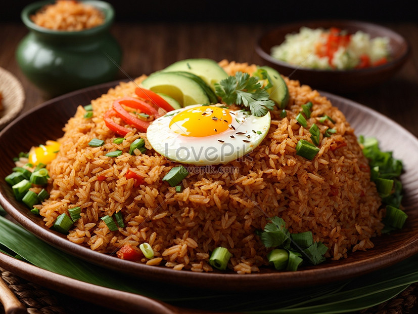
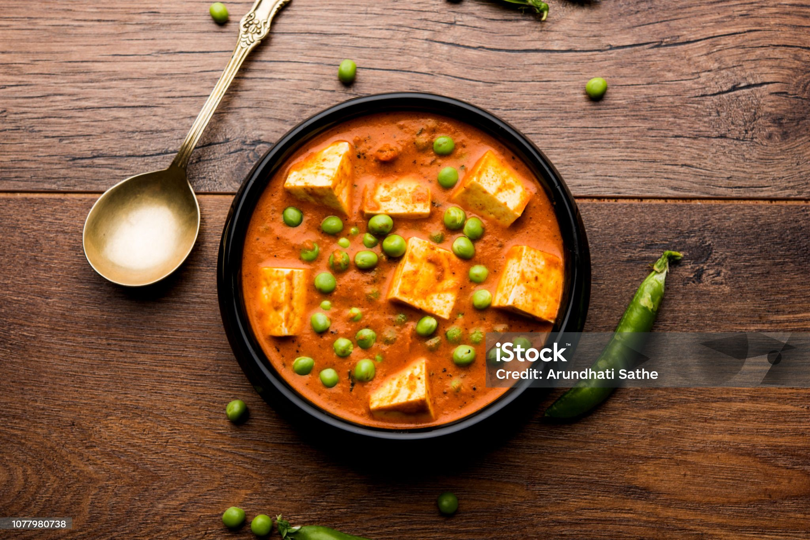
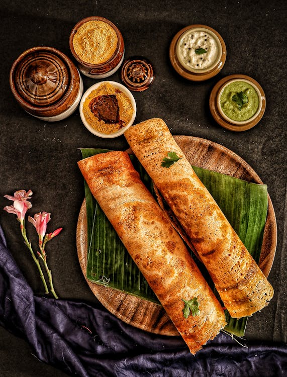

Find Your Favorite Recipes

Fried Rice
A classic Asian rice dish with vegetables and flavors.
★★★★
(4)
1068 reviews

Paneer butter masala
Soft, creamy paneer dish, a favorite for all occasions.
★★★★
(4.5)
724 reviews

Dosa
A crispy and delicious South Indian breakfast option.
★★★★★
(4.5)
2025 reviews

Idli
Soft and fluffy steamed rice cakes, a staple breakfast in South India.
★★★★★
(4.5)
800 reviews
Chicken Chilli
A spicy and flavorful chicken dish perfect for dinner.
Cooking Steps
- Marinate the chicken with spices and set aside for 20 minutes.
- Heat oil in a pan and sauté onions, garlic, and green chilies.
- Add marinated chicken and cook until tender and juicy.
- Serve hot with a garnish of chopped green onions.
Gobi Aloo Curry
A flavorful and hearty curry made with cauliflower and potatoes in a rich, spiced gravy.
Cooking Steps
- Heat oil in a pan and sauté onions, garlic, and ginger until golden.
- Add chopped tomatoes, turmeric, cumin, coriander powder, and cook until tomatoes soften.
- Add cauliflower florets and diced potatoes, and cook for a few minutes.
- Pour in water, cover, and cook until the vegetables are tender.
- Season with salt, add garam masala, and cook for an additional 5 minutes.
- Garnish with fresh coriander leaves and serve hot with rice or roti.